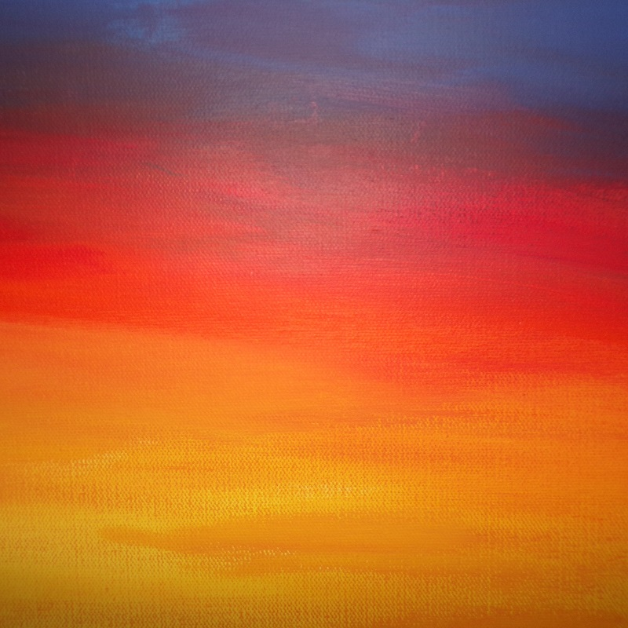
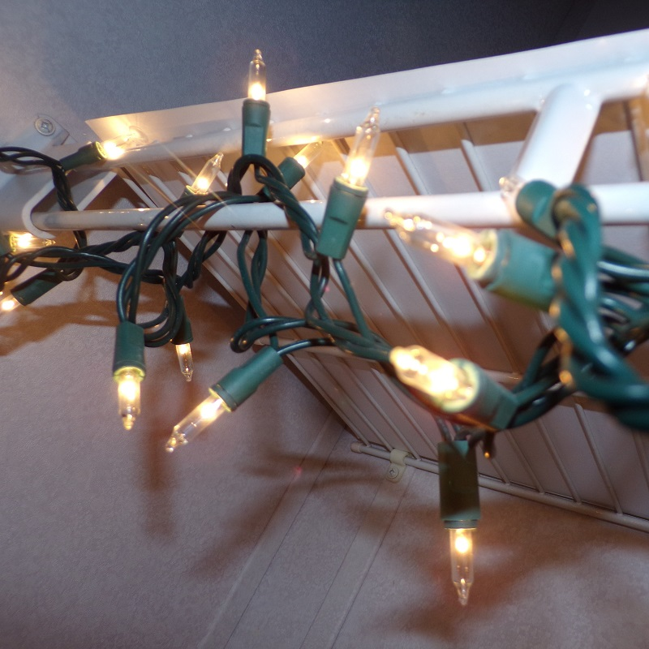
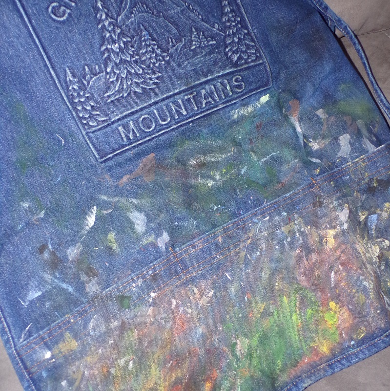
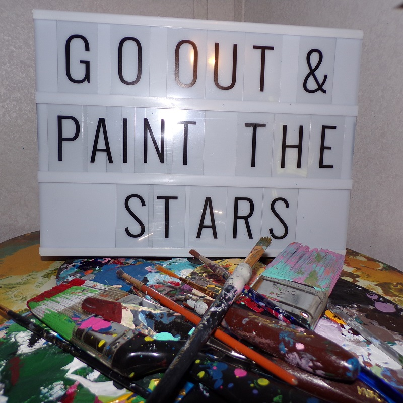

Tips & Tricks

Blending
When blending acrylic paint, it is really important to blend quickly while the paint is still wet. Blend starting with the lightest color and work towards the darkest color.

Lighting
Lighting is really important when it comes to painting. It is best to paint where there is a lot of natural light to avoid any coloring mistakes with the paint.

Clean Your Brushes
Cleaning your brushes is another really important part of painting. Keeping the brushes clean and soft will help avoid any streaks. I usually wear a jean apron that I wipe my brushes off on after each use.

Be Inspired!
The most important piece of advice to give anyone that is painting is to be inspired! Your paintings express how motivated and inspired you were when completing them. The best paintings come from inspired minds!